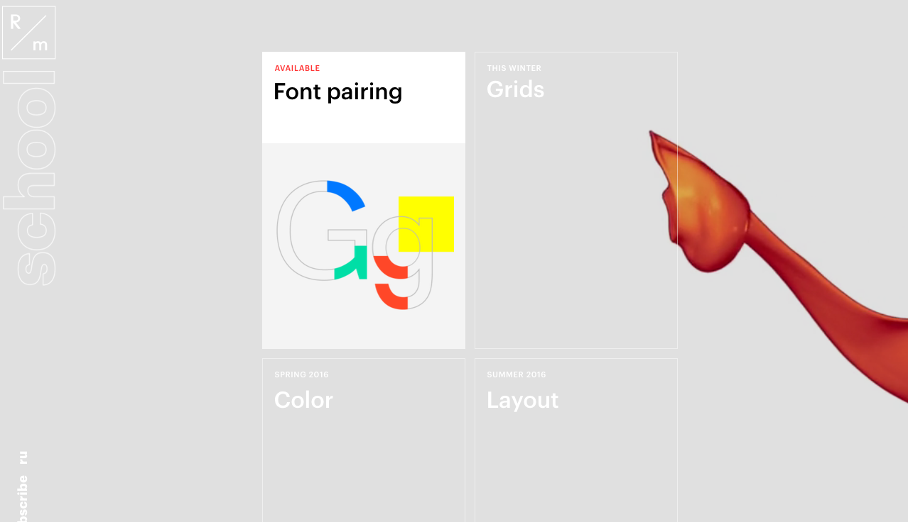

This website brings the art world into computer coding. When you first enter the site its as if splashes of color bust onto the page. The navigation is easy but elegant at the same time.
The website contains facts for graphic design and painting techniques as well. I love there are a wide variety of colors and illustrations because it makes the page more exciting. I can see myself using a moving motion picture for a background in futre projects.
